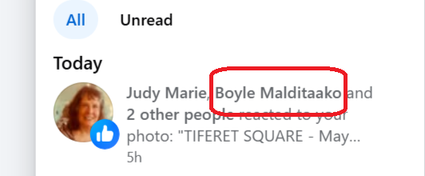

I just realized why they did this
Please note
[email protected] account which North London’s finest managed to get shutdown in January 2026 while deleting all my backups at the same time.
@jackchardwood account. The name is interesting and sounds a bit like “camera on gawk zany”.